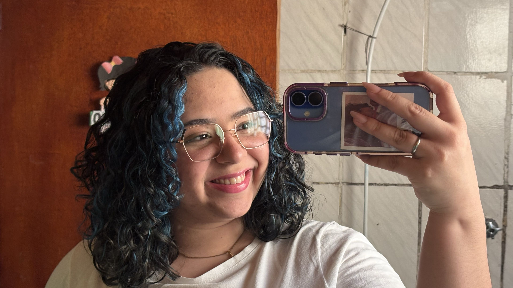

Desenvolvedora | Dev Junior | Programando em python | web design
Sou apaixonada por tecnologia e criatividade. Começando na área de web design de UI/UX prototipando e criando visuais interativos e modernos. Programação em python, desenvolvimento web, criando soluções modernas e eficientes, gosto de aprender coisas novas, trabalhar com desafios, a minha maior paixão nessa área foi o front-end onde gosto de personalizar e transformar ideias e sonhos em realidade.
Site criado para apresentar um projeto em grupo onde criamos um aplicativo para a fábrica de programadores.
Ver projetoSite desenvolvido e criado com a ideia de um studio de tranças diversas.
Ver projetoSite desenvolvido e pensado para apresentar todos os sites de alunos da turma fábrica de programadores.
Ver projeto